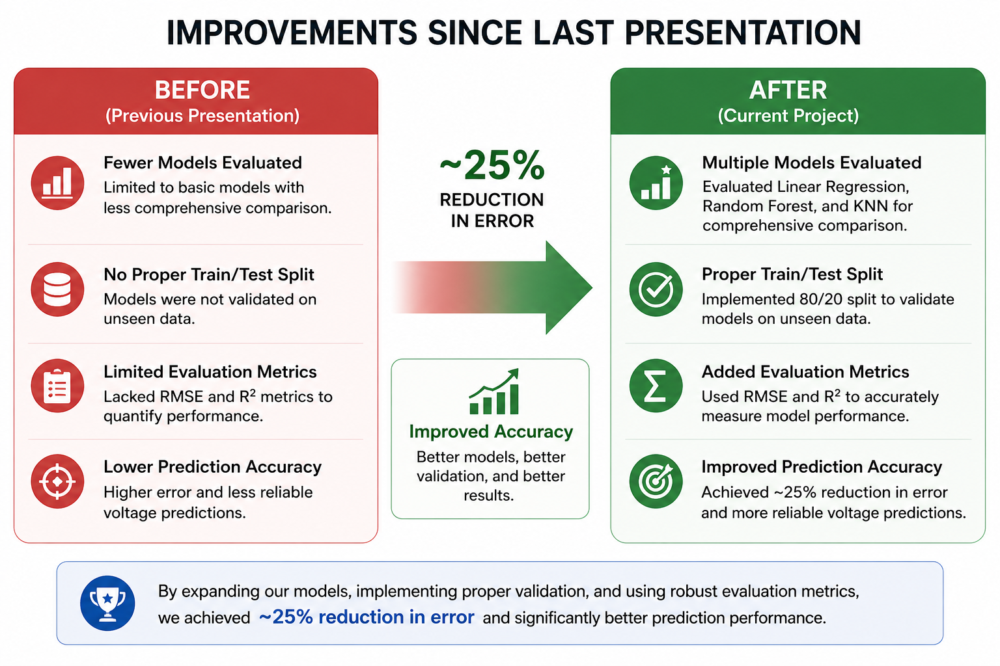

This project explores the use of machine learning techniques to predict battery voltage behavior using real-world charge and discharge cycle data. The dataset consists of approximately 7.2 million observations and includes key features such as relative time, current, and temperature. Multiple models were implemented and evaluated, including linear regression, random forest, K-nearest neighbors (KNN), and a neural network. Performance was assessed using RMSE and R² metrics. Results show that nonlinear models, particularly random forest and neural networks, significantly outperform linear approaches.

Figure 1: Battery behavior over time.
Analysis of the dataset reveals several important patterns in battery behavior. Voltage fluctuates during charge and discharge cycles, while current exhibits spikes during load changes. Temperature varies gradually based on battery activity. These patterns indicate that relationships between variables are nonlinear, motivating the use of advanced machine learning models.

Figure 2: Dataset distribution.
The dataset contains approximately 7.2 million observations collected from randomized battery usage cycles. It includes relative time, voltage, current, and temperature as features. The data was preprocessed to ensure consistency, including converting values to numeric format and organizing structured data. This resulted in a clean dataset suitable for training machine learning models.

Figure 3: Predicted vs actual voltage.
Four models were evaluated: linear regression, random forest, KNN, and a neural network. Linear regression achieved moderate performance but was limited by its linear assumptions. The random forest model achieved the best performance with an RMSE of approximately 0.107 and R² of 0.87. The neural network performed similarly, while KNN showed higher error and variability. These results confirm that nonlinear models significantly improve prediction accuracy.

Figure 4: Neural network predictions.
A feedforward neural network was implemented to model nonlinear relationships in the data. The model achieved an RMSE of approximately 0.110 and R² of 0.863, performing close to the random forest model. This demonstrates that neural networks are highly effective for predicting battery behavior when sufficient data is available.

Figure 5: Model improvements.
Significant improvements were made compared to earlier stages of the project. Additional models were introduced, proper train-test splitting was implemented, and evaluation metrics were added. These improvements resulted in approximately a 25% reduction in prediction error and a substantial increase in model reliability.

Figure 6: Model comparison.
Model performance was evaluated using RMSE and R² metrics. Random forest achieved the best overall performance, followed closely by the neural network. Linear regression served as a baseline, while KNN showed the highest error. These results highlight the importance of using nonlinear models for complex datasets.